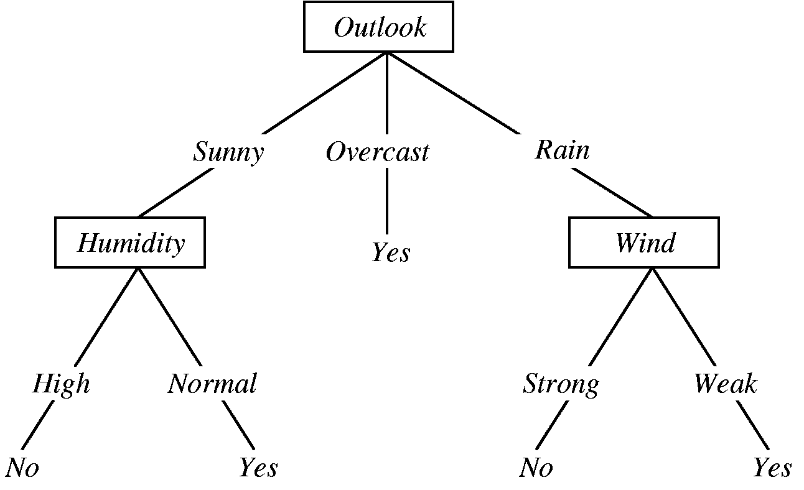
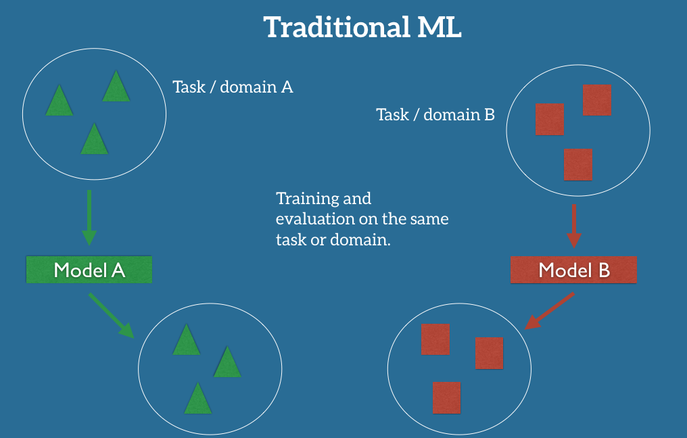

One of the most interesting intersections of disparate academic topics that has forced itself into the modern limelight is that between morality and artificial intelligence. While composed of two highly abstract fields of study, this intersection has very real repercussions. Take, for example the advent of driverless cars.
The scenario will arise when a car has to choose between the life of its passenger and the life of a pedestrian. This is eerily akin to the Trolley Car problem introduced by the philosopher Phillipa Foot in 1967 (see links section for more info). There are many approaches to solving this problem, some of which are being actively pursued. What I aim to do in this essay is outline some of these approaches and then propose the theoretical framework for a new form of machine learning based morality.
Rule Based Morality
The first approach that we are going to look at is a rule based approach. This is the same as saying "if A occurs, do B". Moral decisions tend to carry more complexity to them, though. We would have to model them as "If A and B and C and D ... and Y then Z". Computer scientists model complex conditional relationships like this with decision trees. Each different condition is represented as a different branch going down the tree. Eventually, you will reach the bottom of the tree where a solution is hard coded.
 An example of a decision tree determining wether someone will go outside based on the weather.The issue with rule based morality is immediately apparent. In fact, over 400 years ago Immanuel Kant explained why we can't hard code in the optimal moral decision for any possible situation:
There couldn’t be an imperative that in the strict sense commanded us to do what makes for happiness, because happiness is an ideal not of reason but of imagination, depending only on empirical grounds. This means that whether a person will achieve happiness depends on countlessly many particular facts about his future states; and there is absolutely no chance of picking out the actions that will produce the right infinite totality of consequences that will constitute happiness.
Attempting to hard code the optimal outcome to every situation would require an infinitely long decision tree. You could generalize decisions to address this issue (i.e. only account for the major variables involved in a moral decision); however, there would still inevitably arise situations totally outside the realm of any within the decision tree. Think, for example of the moral dilemmas arising at the advent of new technologies.
Reinforcement Learning
The second approach that we are going to look into is called reinforcement learning. In this method, an artificial intelligence interacts with a given scenario multiple times, experimenting with different potential paths each time. This is similar to trying to beat a video game by trying different things, dying, and playing the level again by trying something different.
If you're playing a video game, it would take you a prohibitively long time to continually make random moves until your random sequence of moves allows you to beat the level. Instead, you store a knowledge of which past moves got you the closest to beating the level in the past. You will then tend toward those moves while also exploring new possibilities to see if those increase your score even more. This is what's known as the explore-exploit tradeoff. GoodAI, a Czech AI startup, has built a Q-learning model that performs this exact type of learning in user prescribed situations.
One of the major issues with this approach, however, is a lack of generalizability. The moral skillset developed in the reinforcement learning approach is confined to the specific scenarios in which the AI was trained. This is the difference between (a) learning the moves to beat a single level of a video game and (b) learning how to play a video game. If a number of variables are changed in a moral situation, will you be able to account for those or will your moral reasoning need to restart from scratch?
Transfer Learning
Enter transfer learning. In traditional machine learning, a we train a model that will then be used to make predictions on datasets of the same form. If we feed the model data of a new type, the model will sputter to a stop. Imagine trying to run a car by filling up the gas tank with green tea. Transfer learning addresses the problem of differing input, which is integral to addressing the diversity inherent to moral quagmires.
So what would transfer learning look like in a moral context? I propose beginning with a binary classifier (e.g. a Support Vector Machine, Logistic Regression, or Neural Net). This classifier will take as input a specific scenario in which a moral dilemma exists and n possible choices are present. The classifier would then calculate the "moral score" of each of the n possible choices, landing on the choice with the maximum moral score.
If this binary classifier were fed into a transfer learning context, the model would have the flexibility to address different types of situations which a pre-existing knowledge of morality.
One major question pertaining to this, though, is how do we program moral scores? The simplest computational method would be a bounded utilitarian model. By this I mean a model that acts to maximize the common good within bounds. An example of an established bound would be: an AI cannot kill people. These boundaries would need to be domain specific as agricultural ethics have emphatically different ethical boundaries than, say, autonomous vehicles. This is the central tenet of situational ethics.
The Framework of Computational Ethics
In Beyond Good and Evil, Nietzsche opined:
There are absolutely no moral phenomena, only a moral interpretation of the phenomena.At the time, Nietzsche was countering moral essentialism, the belief that there exists an inherent morality in the universe. This claim was psychological more than philosophical. Nietzsche was trying to represent morality as a subjective experience. When building morality into artificial intelligence, though, we are working in a framework totally independent of subjective experience.
Whether you are a Christian Essentialist or Existentialist, you would agree that computational ethics are not hard coded by nature or a deity. Nor are they established via the subjective experience of the computer. That would be impossible as computers have no qualia. Instead, computational morality is built by training, repition and guess work. Maybe morality is neither inherent nor interpretive, but a skill developed through trial and lots and lots of error.
Links
- A Video on the Trolley Car Problem
- Immanuel Kant's Fundamental Principals of the Metaphysics of Morals
- GoodAI's Brain Simulator
- An Introduction to Transfer Learning
- Friedrich Nietzsche's Beyond Good and Evil
- 1843 Magazine's Teaching Robots Right from Wrong